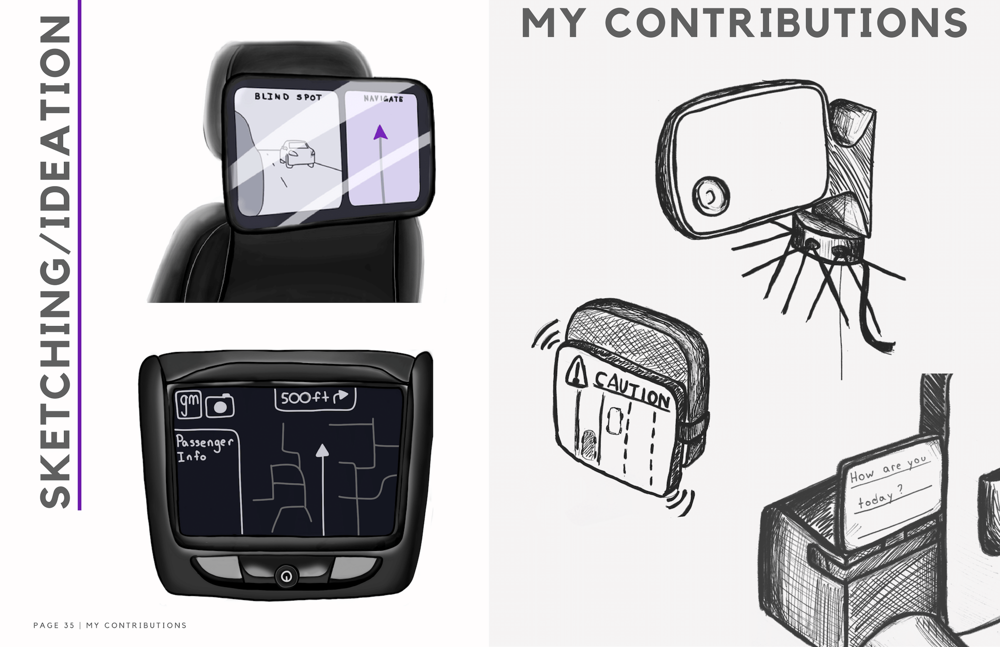
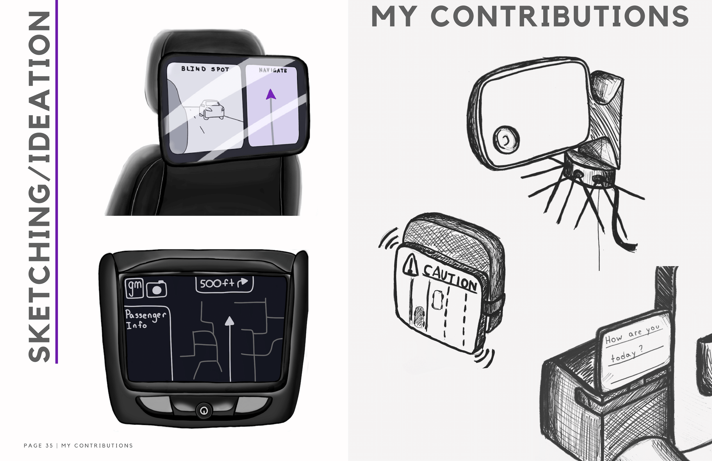

Threefold timeline proposal of innovative suggestions that highlight the future of safety and accessibility in rideshare for the General Motors company
Feb 2023 - Apr 2023
Illustrator
Figma UI
Research and Interviews with Users
Photoshop
Isabelle Patrick, Michael Silverman, Aidan O'Driscoll, Meriel Carney, and Stefaan Meinert
Ben Kirkland, Martha Sullivan
The VTID program partnered with General Motors to research accessibility in the automotive industry and to cultivate design opportunities for change. Our team researched the lack of accessibility, safety, and adaptive measures in rideshare services. We created RideSafe, a threefold timeline proposal of innovative suggestions that highlight the future of safety and accessibility in rideshare for the General Motors company.
My main responsibility was spearheading the design and composition of the magazine with my groupmate Isabelle. We organized and formatted the writing and images as well as the layout of our final document. I was also responsible for many of the Photoshop renders and Figma UI displays and images throughout the magazine. Finally, before coming together as a group I conducted personal research on the effects that different chronic illness' have on a person's ability to drive.

 
